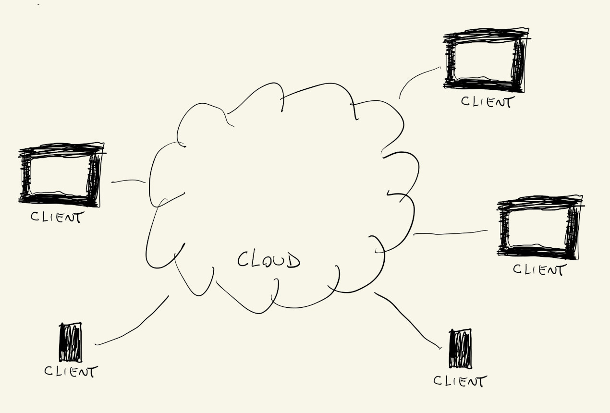
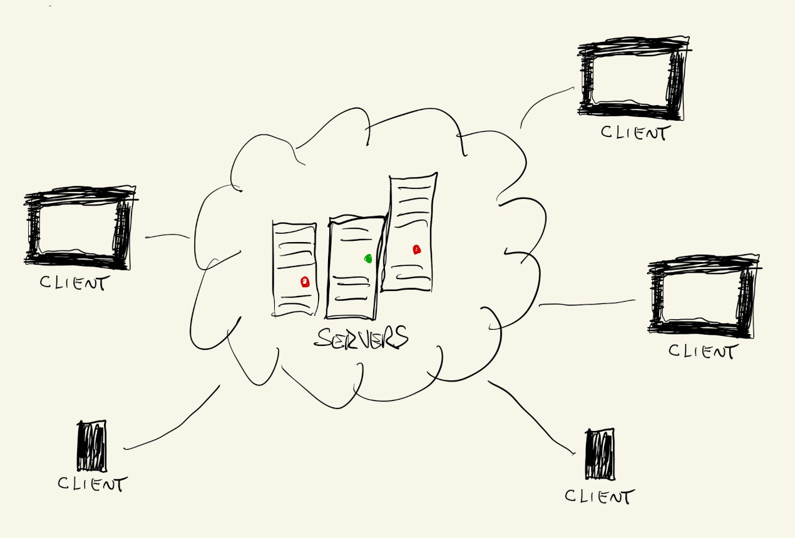
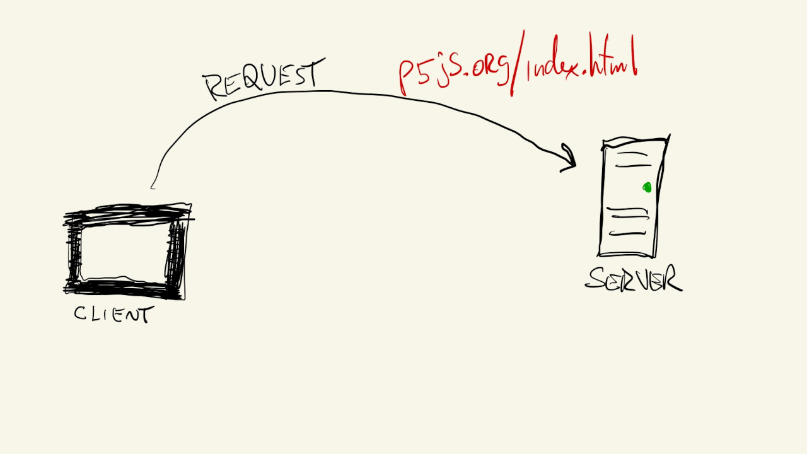
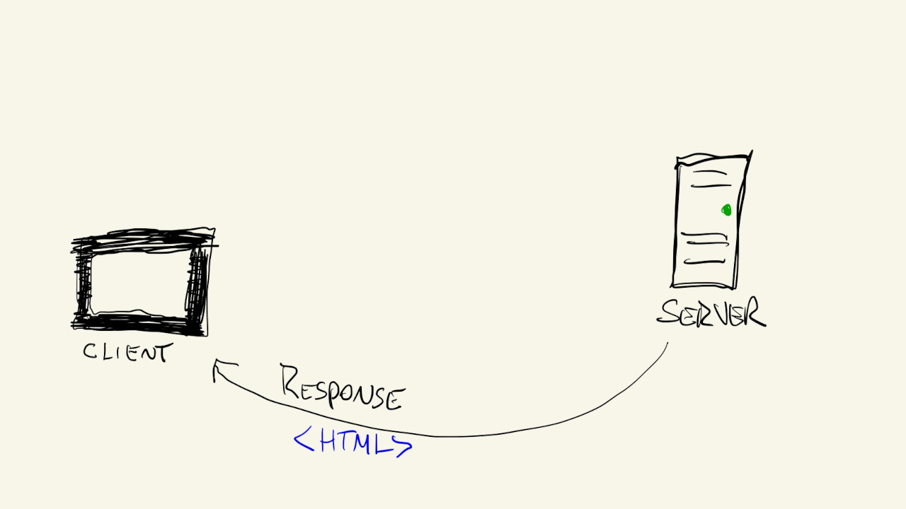
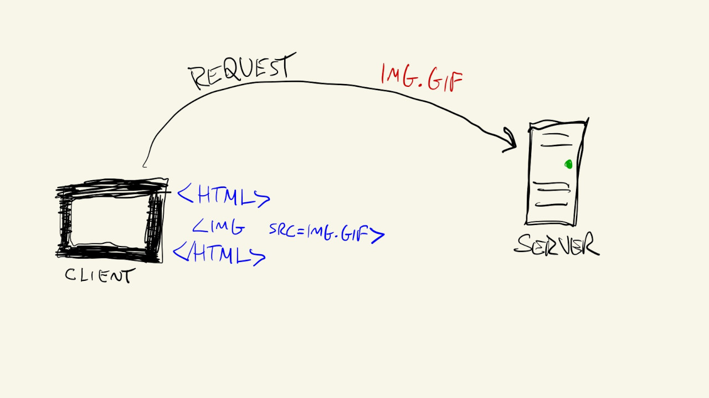
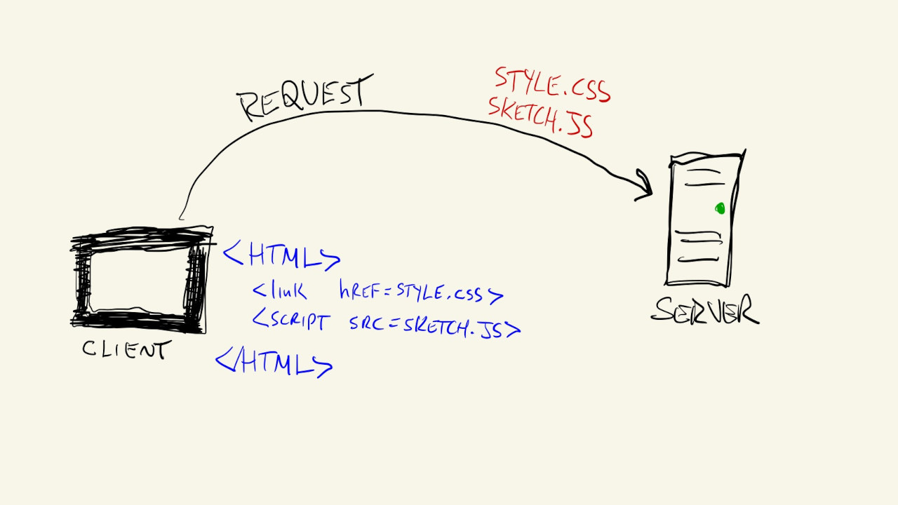
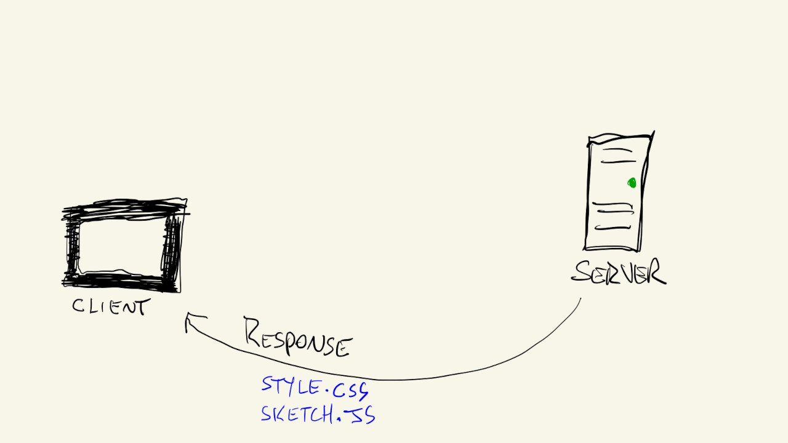
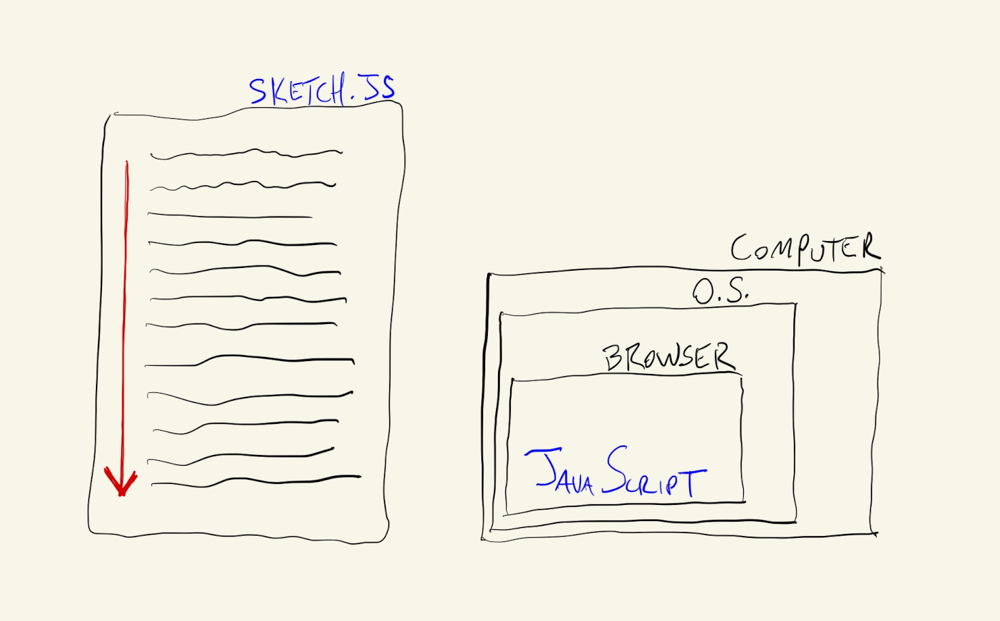

Since JavaScript was originally designed to run in browsers over the internet, it helps to have a working understanding of how the internet actually functions.

Strip away the metaphors, there is no "cloud," no matrix, and what remains is simpler: the internet is other people’s computers. Specifically, it is a global network of powerful, purpose-built machines called servers: machines designed to store files and to continuously receive requests and send responses at scale. These servers live in large, climate-controlled facilities called data centers, typically on land. Some of these facilities are surprisingly exotic, Microsoft, for instance, ran an experimental underwater data center off the coast of Scotland as part of Project Natick, testing whether ocean cooling could improve energy efficiency. And connecting all these data centers across continents are thousands of kilometers of undersea fiber-optic cables running along the ocean floor.

When you type a URL into your browser, your computer sends a request over this network to the appropriate server, asking for a specific file. A URL like p5js.org is, in practice, a request for a file called index.html stored on that server. If the server recognizes and authorizes the request, it responds by sending that file back to your computer.

Your web browser, Chrome, Firefox, Safari, is, at its core, an interpreter of code. When it receives an html file from a server, it reads that file and uses its contents to construct and display a page:

The html code might look something like this:
<html>
<head>
<title>My Homepage</title>
<link href="style.css">
<script src="sketch.js"></script>
</head>
<body>
Page Content
<img src="image.gif">
</body>
</html>
HTML (HyperText Markup Language) is the backbone of every webpage. It defines the content and structure of a page: headings, paragraphs, images, links, and how they are organized. To see what a webpage looks like with only HTML and no styling at all, the world’s first website is still live, exactly as it appeared in 1991.
HTML files frequently reference additional files. When the browser encounters a reference to an image, a stylesheet, or a script, it makes additional requests to fetch those files too.

css files (Cascading Style Sheets) define the visual presentation of a page: fonts, colors, spacing, layout. They are entirely separate from the content, the same HTML can look completely different depending on which CSS is applied. A compelling demonstration of this is the CSS Zen Garden: a single HTML file, styled with dozens of completely different stylesheets, each producing a radically different visual result.


If a webpage were an apartment, the html file defines where the walls, doors and windows go, while the css file specifies their materials and colors. JavaScript, then, specifies what happens when different light switches are flipped.
JavaScript files describe how the browser should behave in response to user interaction: what happens when a button is clicked, how a form should be validated, how content should update dynamically without reloading the page. This is the layer that transformed the web from a collection of static digital documents into the interactive, application-like environment we use today.
In the early days of the web, before JavaScript was a fully developed language, websites were largely static. Once the html and css files were downloaded and rendered, the browser’s job was done, the digital equivalent of a printed page. JavaScript changed this by enabling content and behavior to change dynamically in response to user actions.
Once a JavaScript file (a .js file) is downloaded, the browser starts a parallel process to read and interpret it. This is handled by the browser’s JavaScript engine, an internal component that goes through the code line by line and executes its instructions. This is what it means for JavaScript to be an interpreted language: rather than running directly on hardware, a JavaScript program requires another program (the engine) to run it.

Today, JavaScript is a robust, general-purpose language capable of running outside the browser as well, through environments like Node.js, though it always requires an interpreter. It supports a wide variety of programming styles and is extensively extended by libraries (reusable collections of pre-written code) and frameworks (libraries that also impose a structure and methodology on how programs are organized).
p5.js is a JavaScript library focused on creative coding. It extends the core language with tools for drawing shapes, working with color, handling animation, and responding to input, all directly inside a browser window.
Importantly, when working with p5.js in this course, you do not need a web server or an active internet connection. A browser can interpret JavaScript files stored locally on your own computer just as readily as files downloaded from a remote server. This means you can write code, open the resulting files in your browser, and see the output immediately, no deployment required. That said, once you have something worth sharing, a p5.js sketch can absolutely be hosted on a server and made accessible to anyone with a browser. That is the full picture, but not something we need to worry about right now.